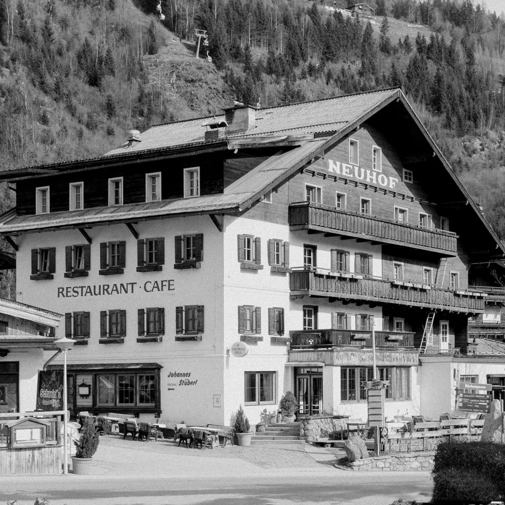
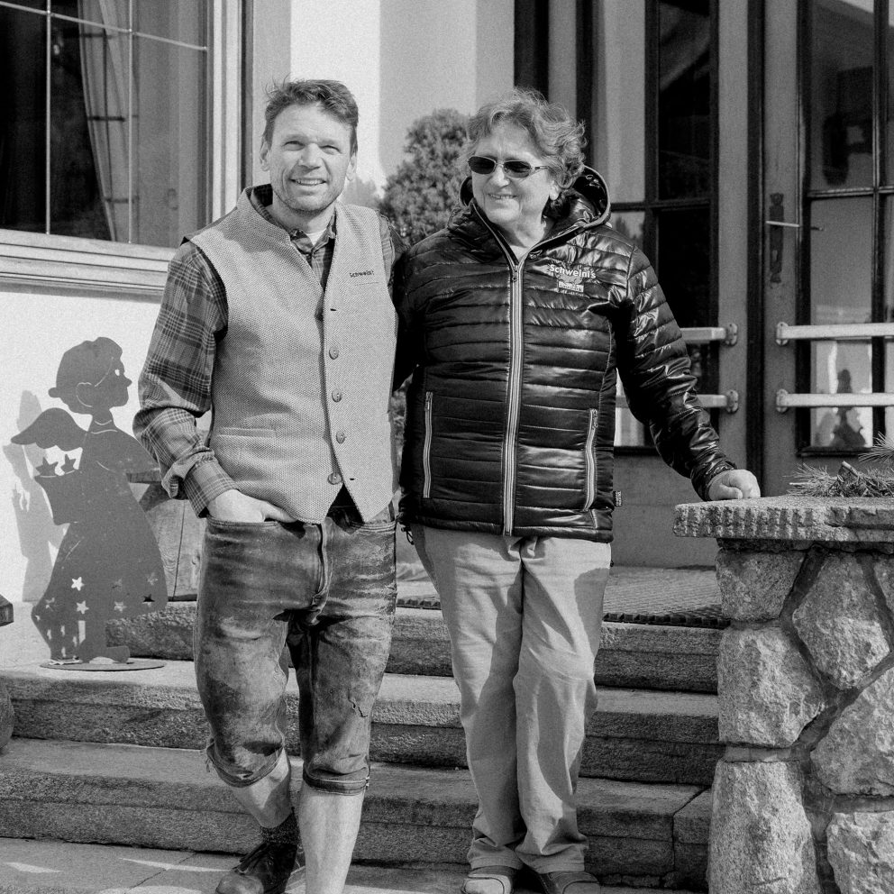

Alt und Neu, Außen und Innen – dem Geist der Zeit angepasst.
Das Apparthotel – Venediger Lodge liegt mitten in Neukirchen am Großvenediger. Die direkte Anbindung an die Wildkogel Arena ermöglicht zu jeder Jahreszeit einen außergewöhnlichen Bergurlaub – perfekt für Skifahrer, Wanderer oder Mountainbiker.
Die Venediger Lodge schafft eine direkte Verbindung zwischen Mensch und Umgebung. Genieße den besonderen Komfort des Aparthotels und erlebe eine entspannte Auszeit in den Kitzbüheler Alpen und den Hohen Tauern.


Alt und neu, außen und innen – dem Geist der Zeit angepasst. Mit viel Erfahrung, Gefühl und Respekt für die Geschichte des Gasthof Neuhof haben kreative Köpfe eine ästhetische Verbindung zwischen dem fast 100 Jahre alten Gasthof Neuhof und der 2019 errichteten neuen Venediger Lodge geschaffen. Hier wurde die charmante alte Zeit gekonnt ins Licht der Gegenwart gerückt.
Viele Jahre lang galt der Gasthof Neuhof als Vorzeigehaus im Oberpinzgau. Seit 1928 war er der Mittelpunkt des Dorflebens von Neukirchen und wurde über drei Generationen hinweg von der Familie Schweinberger geführt.
Dein heutiger Gastgeber, Michel Schweinberger, hat schließlich Herz und Seele des traditionellen Gasthof Neuhof behutsam abgebaut und verpackt, um es in der neuen Venediger Stubn sorgfältig ins beste Licht zu rücken.
Venediger Lodge · Marktstraße 64 · 5741 Neukirchen · Österreich
+43 6565 6204 · info@venediger-lodge.at
Rezeption: 08:00–20:00 · Check-in: 14:00–20:00 · Check-out: bis 11:00